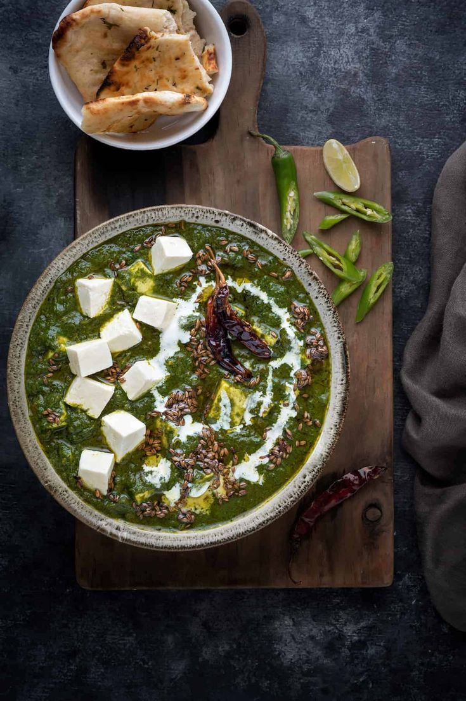

Palak Paneer Recipe

Description
Palak Paneer, an Indian dish cosisting of chhena or paneer in a thick paste made from pureed spinach.
With a medium hit of spice, bites of creamy paneer and a life-affirming hit of spinach, it's vegetarian comfort food at its best.
Ingredients
- Paneer
- Palak
- Creame
- Dry spices
- Tomatoes
- Onion
- Salt
Steps
- Shallow fry the paneer cubes
- Boil the spinach and blend it in a puree
- Saute onion , tomatoes and spinach puree
- Add dry spices and paneer
- Top it off with little bit of creame
Home